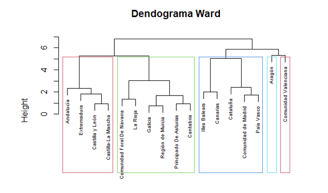

Usando RStudio y Weka desarrollé los mejores clasificadores para diferenciar a los clientes que tienen un "buen estatus"
frente a aquellos que tienen un "mal estatus" o que no podrán devolver adecuadamente el pr√©stamo. üè¶
Usando RStudio y Weka utilicé técnicas de clustering para agrupar los municipios en grupos homogéneos pero heterogéneros entre sí, lo que nos
permitirá comprender mejor las similitudes y diferencias entre las diversas regiones valencianas. üåÜ

Usando RStudio y Weka, empleé metodologías de agrupamiento directo y jerárquico con el fin de categorizar comunidades en grupos que sean homogéneos de forma interna pero heterogéneos con respecto al resto de grupos.
Este enfoque tiene como objetivo mejorar nuestra comprensi√≥n de las caracter√≠sticas compartidas y las distinciones entre las diferentes comunidades espa√±olas. üìç

Usando RStudio y Excel identifiqu√© patrones de comportamiento examinando los datos para tomar decisiones más informadas en el futuro en cuanto al control de impuestos. üßæ

Usando Weka emple√© t√©cnicas de asociaci√≥n para encontrar patrones interesantes en la compra de productos en supermercados y en las plantillas de empleados de una empresa para tomar decisiones respecto a la disposici√≥n de productos en el establecimiento y estrategias del equipo de RRHH. üõí

Usando Rstudio y Weka us√© t√©cnicas de factorizaci√≥n para tratar de explicar la mayor parte de las variables originales con un n√∫mero menor de factores. üìã